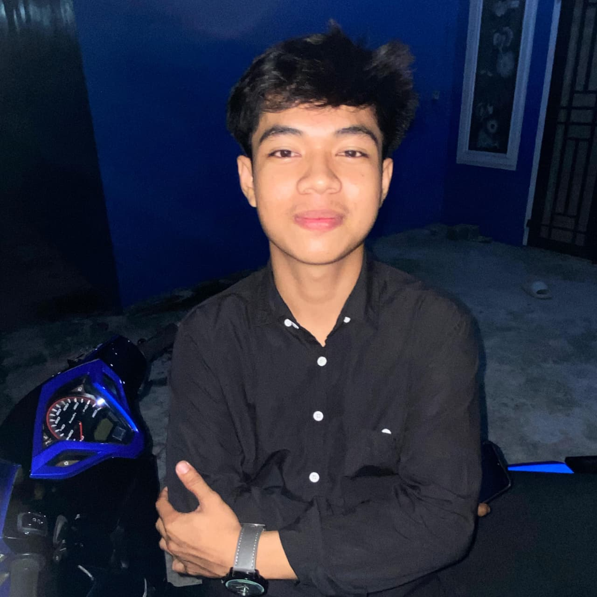

Foto Profil

📝 Tentang Saya
Halo! Perkenalkan nama saya Dimas Prioseto. Saya lahir di
Cinta Damai pada tanggal 18 Agustus 2006. Saat ini saya mahasiswa
Sistem Informasi di Universitas Muhammadiyah Sumatera Utara angkatan 2024.
Saya selalu bersemangat untuk belajar hal-hal baru dan mengembangkan
keterampilan saya.
📋 Data Pribadi
- Nama Lengkap: Dimas Prioseto
- Tempat, Tanggal Lahir: Cinta Damai, 18 Agustus 2006
- Alamat: Dusun 1 Desa Cinta Damai
- Status: Belum Menikah
- Agama: Islam
- Kewarganegaraan: Indonesia
🎨 Hobi & Minat
- Bermain Playstation
- Sepak bola dan Futsal
- Berenang dan jogging
- Mencoba Makanan-Makanan Viral
- Modif Motor
- Menonton Manchester United
🎓 Riwayat Pendidikan
-
SD Negeri 104207 Cinta Damai (2012 - 2018)
Lulus dengan nilai rata-rata 8.1
-
SMP Negeri 3 Percut Sei Tuan (2018 - 2021)
Lulus dengan nilai rata-rata 8.8
-
SMA Swasta PAB 8 Saentis (2021 - 2024)
Jurusan IPA, lulus dengan nilai rata-rata 8.9
-
Universitas Muhammdiyah Sumatera Utara (2024 - Sekarang)
Jurusan Sistem Informasi, IPK 3.72/4.00
💻 Keterampilan
- Programming Languages: HTML, CSS, JavaScript, Python,
- Frameworks: React, Node.js, Express
- Database: MySQL
- Tools: VirtualBox, VS Code, Linux
- Languages: Indonesia (Native), English (Advanced)
💼 Pengalaman Kerja
Saat ini saya belum memiliki pengalaman kerja formal,
namun aktif mengerjakan project pribadi dan terus mengembangkan skill melalui latihan dan pembelajaran mandiri.
📅 Jadwal Harian
| Waktu |
Kegiatan |
| 06:00 - 07:00 |
Persiapan Kuliah |
| 07:00 - 12:30 |
Kuliah |
| 13:00 - 14:00 |
Istirahat & Makan Siang |
| 13:00 - 16:00 |
Lanjut Kuliah (jika ada) |
| 16:00 - 19:00 |
Free Time |
| 19:00 - 22:00 |
Belajar |
📞 Kontak Saya
📱 Social Media
Facebook |
Twitter |
Instagram